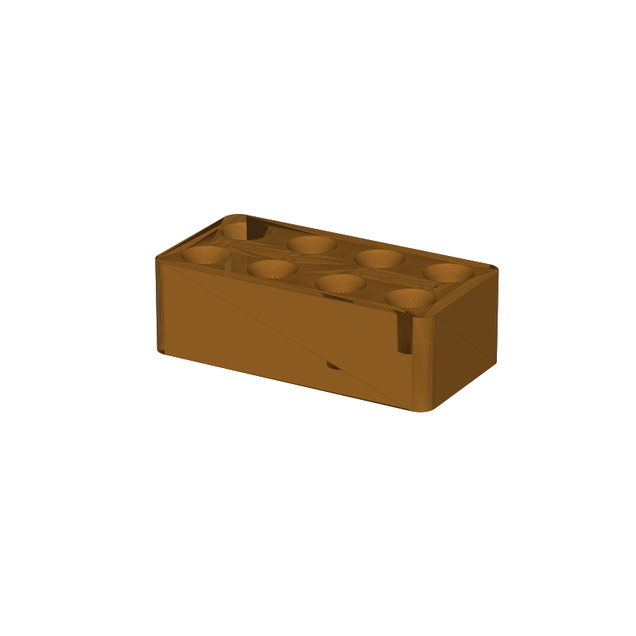

Hotend nozzle dock STL, eight tapered bays in one flat print
Loose hotend nozzles roll, tip over, and collect brass shavings in a drawer. This dock parks eight of them upright: eight tapered bays in two rows of four, the front row gripping MK8 nozzles, the back row gripping V6. Drop a nozzle in tip-up and the funnel mouth catches the brass hex, centers it, and lets it ride in the cone while the thread hangs inside the grip neck, so nothing tips and nothing rolls across the bench.
The fit is sized from the thread, not the hex. Grip necks are cut to the nominal thread crest plus 0.4 mm: 6.3 mm for MK8 (M5×0.8, crest 5.9 mm) and 7.3 mm for V6 (M6×1.0, crest 6.9 mm). The funnel mouth is 14 mm across at the cone's full height, so a 7 mm across-flats hex rides in the cone instead of falling through. Brands that run oversize threads or odd hex flats sit higher in the funnel; they still park, they just do not lock in as tight.
The dock is 77 × 39 × 24 mm with a 3 mm floor and 3 mm walls, 64.1 cm³ of PLA. The bays are blind holes, so it prints flat with zero overhangs and no supports: the cone mouths widen upward, which prints as a chamfer, never a bridge. Small triangles debossed on the top face point at each mouth, so a glance tells you which row is which.
This page carries the measured spec sheet: dimensions taken from the mesh, the bay geometry layer by layer, and preview renders, so you can check the sizes before you slice.

Spec sheet, measured from the mesh
| Spec | Value |
|---|---|
| Dock body | 77.0 × 39.0 × 24.0 mm, one piece, exported flat on the bed, 4 mm rounded corners |
| Bays | Eight tapered bays, two rows of four; front row MK8, back row V6, 5 mm walls between mouths |
| Grip necks | Ø6.3 mm front (M5 crest 5.9 + 0.4), Ø7.3 mm back (M6 crest 6.9 + 0.4), 9 mm of straight grip, verified from the mesh at the neck band |
| Base pockets | Ø6.6 mm front / Ø7.6 mm back below the necks, 8 mm tall, clears the thread core down to the floor |
| Funnel mouths | Cone above each neck widening to Ø14 mm (mouth radius 7 mm); opening at the top face measures Ø12.5 mm, the cone's full diameter lands 1 mm above the surface |
| Direction triangles | Eight triangles debossed 0.6 mm into the top face, 3 × 2.4 mm, apex pointing at each mouth |
| Floor and walls | Floor 3 mm solid under every bay (bays are blind), outer walls 3 mm |
| Volume | 64.1 cm³ total, about 80 g of PLA |
| Print time | About 2.7 h, PLA, 0.4 nozzle, 0.2 mm layers |
| Construction | One piece, prints flat, no supports, no brim; the only overhang-adjacent surfaces are the upward-widening cone mouths, which slice as chamfers |
| Mesh check | Watertight, winding consistent, 1 body, 8,124 faces, genus 0 (trimesh 5.1.0, 2026-09-10) |
| Files | STL and 3MF plus a parametric generator script |
| License | CC-BY 4.0 on the MakerWorld upload; royalty free, no AI training, direct from us |
How the fit is sized
Each bay has three zones, from the floor up: a base pocket that clears the thread core, a straight grip neck sized to the thread crest, and a funnel mouth that widens to the top face. The grip neck does the holding. It is cut to the nominal thread crest plus 0.4 mm of diametral clearance, 6.3 mm for an MK8 and 7.3 mm for a V6, which leaves the thread hanging inside the neck while the hex rides the cone above it.
The mouth clears the hex by design. A 7 mm across-flats hex measures about 8 mm across corners, well under the 12.5 mm opening at the surface, so the nozzle drops in and the cone catches the hex flats. A brand with a chunkier hex or an oversize thread stops higher in the funnel: parked, visible, just not locked in as tight. If you run a mixed brand bench, the neck diameters are parameters, so you can retune a row and rebuild.
The debossed triangles mark the rows. Each apex points at its mouth, front-row triangles point back, rear-row triangles point forward, and they sit in the corridor between the rows where the floor is solid.
Print notes
The dock slices as exported: a flat slab with blind vertical cuts, cones widening upward, no overhangs, no supports, no brim. The mesh is checked before upload: watertight, winding consistent, one solid body, genus 0, and a 3 mm solid floor under every bay.
I have not test-printed this one yet, and that is stated here on purpose. If a nozzle sits loose in its neck, drop the neck_r value for that row in the generator and rebuild; if a nozzle bottoms out before the hex seats, raise floor_t or trim the base pocket radius base_r. The generator (gen_dock20.py) takes the row and column count, funnel and neck radii, neck height, floor, walls, gap, and corner radius, so every one of these is a one-line change. If you print it, post a make with how your nozzles seat.
Where to get the files
The dock is staged on our MakerWorld account and goes public on our profile once it is submitted and clears review.
More printed organizers and tools, with a status table for the pool: 3D printed desk organizers and printable tools.
FAQ
Which nozzles fit which row?
The front row grips MK8 nozzles (M5×0.8 thread, 6.3 mm neck) and the back row grips V6 (M6×1.0, 7.3 mm neck). Nozzles that share those threads, clones included, park the same way. Oversize threads or odd hex flats sit higher in the funnel and park looser but still upright.
Why does it print with no supports?
Every cut in the slab either goes straight down or widens upward. Blind bays leave a solid 3 mm floor instead of through holes, and the cone mouths print as chamfers, never as bridges. There is nothing in the geometry that hangs over air.
Why park nozzles tip-up instead of in a case?
Tip-up keeps the thread off the bench so grit stays out of it, keeps every nozzle visible at a glance, and lets you grab one by the hex without digging. A nozzle that sits in the cone stays centered by gravity; there is nothing to clip, latch, or align.